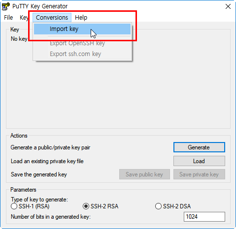
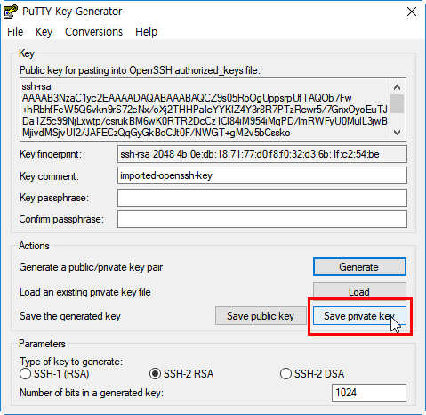
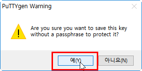
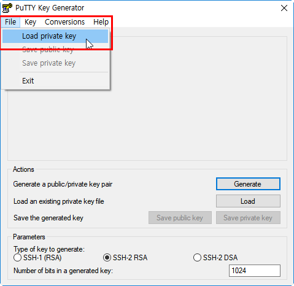
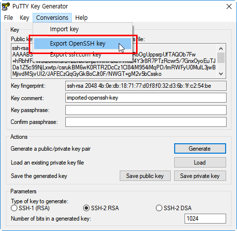
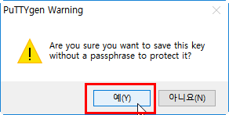

Warning
This content has been generated by machine translation. The translations are automated and have not undergone human review or validation.
3.5.3 Changing the PEM <-> PPK Format
Privacy Enhanced Mail (PEM)
Generated via ssh-keygen command based on an earlier document in the key pair format used by an OCI instance
PuTTY Private Key (PPK)
The key format used by PuTTY, which is a format created by default when saved through PuTTY Key Generator
PEM to PPK format conversion
1 . PuTTY Post-install Key Generator (http://www.putty.org/) 2. Run the PuTTY Key Generator. 3. Open the PEM file with the Conversion > Import Key command.

-
When the key file opens, click Save private key to save it in PPK format


PPK -> PEM format conversion
-
Run the PuTTY Key Generator.
-
Open the PPK file with the File > Load private key command.

-
When the key file opens, click Export OpenSSH Key to save it in PEM format


As an individual, this article was written with my personal time. There may be errors in the content of the article, and the opinions in the article are personal opinions.